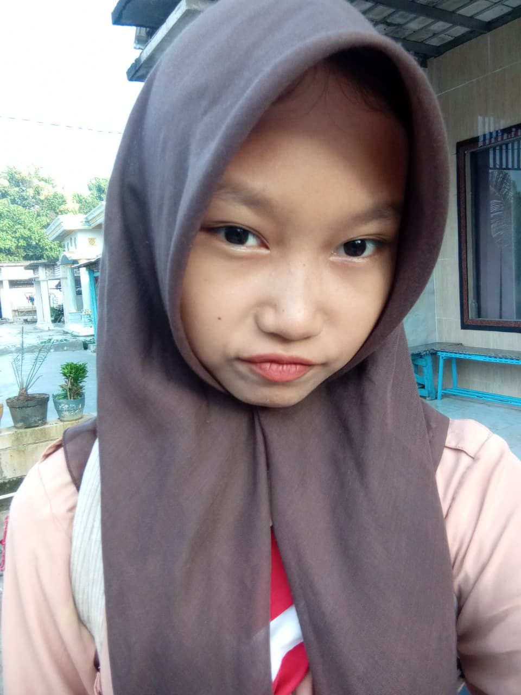
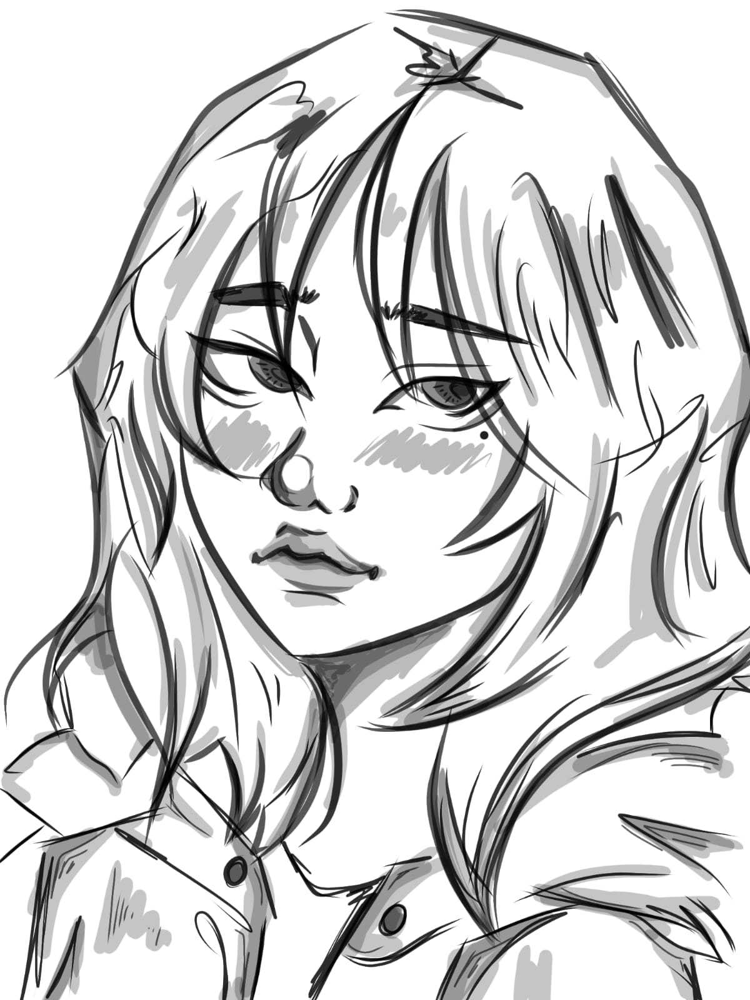
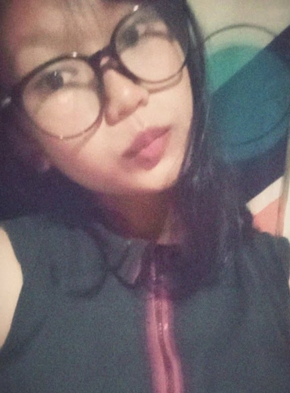
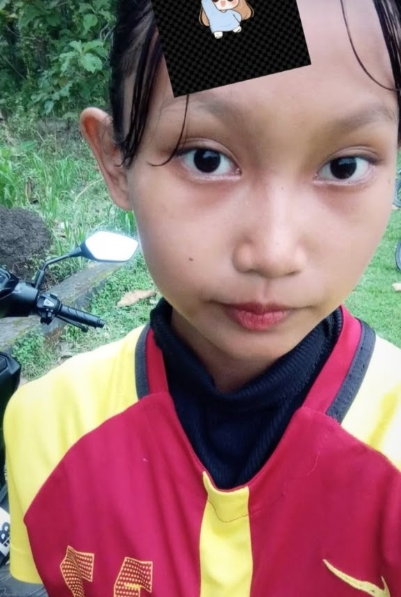
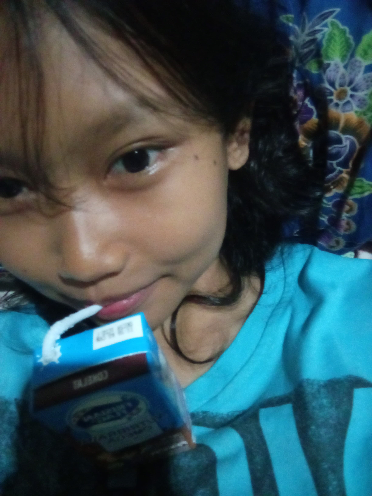
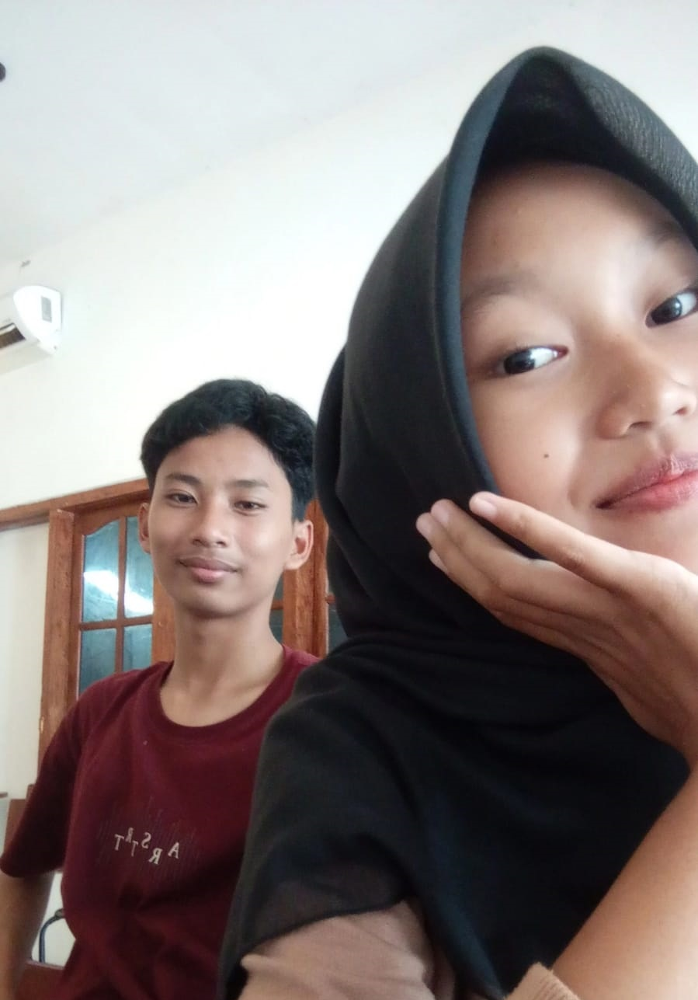

The Muse

"In a gallery full of art, I would still stare at you."
Sebuah apresiasi kecil untukmu di hari Valentine ini.
Auditory

Seperti melodi Chase Atlantic di tengah malam.
Gelap, misterius, namun selalu membuatku ingin kembali mendengarnya.
The artist

Kreativitas tanpa batas serta imajinasi yang sungguh elok.
Seni mu seperti suatu ekspresi mendalam yang di keluarkan langsung dari belahan jiwa.
The Mind

Caramu memandang dunia dengan kacamata Psikologi selalu membuatku kagum.
You analyze minds, but you stole my heart.
Passion

Di lapangan atau di kehidupan, semangatmu tak tertandingi.
Your energy is my favorite thing to witness.
Comfort

Susu putih yang menenangkan, dan Nasi Padang yang penuh rasa.
Hal-hal sederhana yang membuatmu bahagia, membuatku bahagia juga.
Destiny

Angka 11 bukan lagi sekadar angka.
Itu adalah pengingat bahwa semesta berkonspirasi untuk mempertemukan kita.
Her Universe
Kumpulan hal-hal yang kamu sukai, dan hal yang aku sukai (itu kamu).
Letter for Jehan Aiko
The day will come
When my body no longer exists
But in the lines of this poem
I will never let you be alone
The day will come
When my voice is no longer heard
But within the words of this poem
I will continue to watch over you
The day will come
When my dreams are no longer known
But in the spaces found in the letters of this poem
I will never tired of looking for you